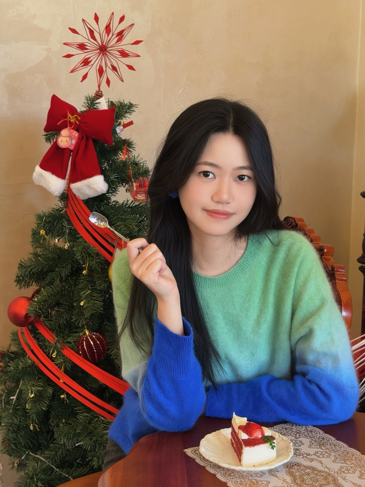
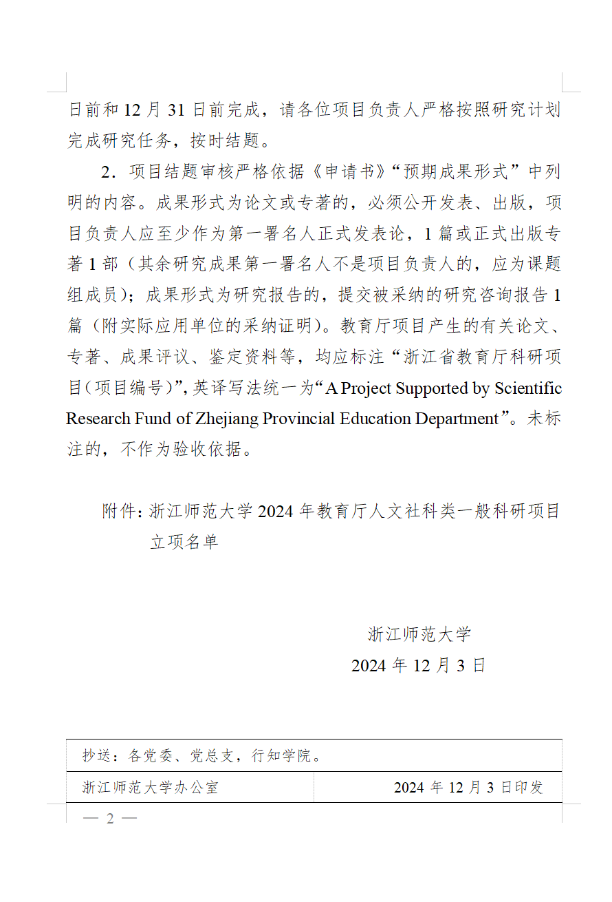

意大利佛罗伦萨中文学校 · 教学管理实习
面向40名海外华人子女及其家长维护线上沟通群，跟进课程通知、学习反馈、问题答疑与临时事项；针对学生与家长的不同关注点调整沟通方式，并持续跟进反馈处理进度。
一名注重实际成果的硕士应届生，具备良好的信息整理、文字表达、沟通协调与项目执行能力。能够快速理解任务、梳理复杂信息，并将目标转化为清晰、可落地的行动。

围绕海外用户服务、内容运营与新媒体协作，我持续积累需求沟通、反馈跟进和内容交付经验。
从汉语国际教育到语言学研究，我持续训练信息分析、文字表达与跨文化沟通能力，也在校园实践中把知识转化为可以落地的方案。
主持浙江省教育厅一般人文社科类科研项目，持续开展语料收集、田野调查、成果撰写与经费管理。
连续获得校级奖学金，并长期参与学院团学活动、留学生晚会及学生工作。
规范的文字能力、办公工具与沟通能力，是我处理信息、推进协作和完成任务的基础。

全国计算机二级 WPS Office，熟悉文档、表格与信息整理工作。

大学英语四、六级，具备基础英文阅读与沟通能力。

高级中学教师资格证，具备结构化表达与教学沟通能力。

规范、清晰的口头表达能力，适合宣讲、汇报与多方沟通场景。

钢琴十级、电子琴七级；长期艺术训练培养了耐心与专注。
从政策与文献检索，到申报书撰写、答辩、执行和经费报销，我完整参与了科研项目的全生命周期。

2024.12—2026.04 · 独立完成项目申请书、研究计划及相关材料，经院级、校级审核与答辩后获批立项。
重视信息准确性与时间节点，能够在不同对象之间保持清晰、耐心的沟通。
具备销售支持、需求分析、资料整理和事项跟进能力；工作细致耐心，能够快速理解新任务，并根据沟通对象调整信息重点。
如果我的经历与你正在寻找的人选相契合，期待进一步交流，也期待在新的岗位中创造实际价值。